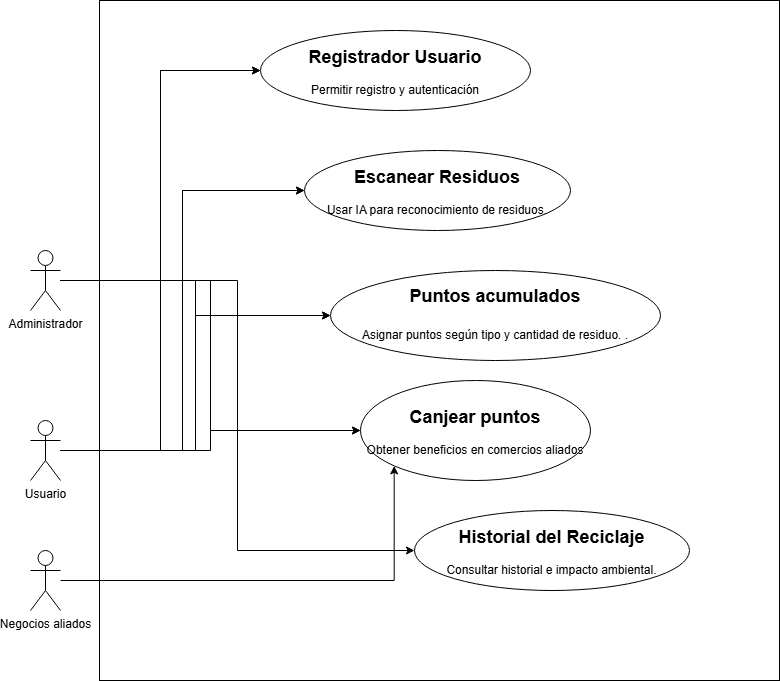

Diagramas

Sistema web y móvil para incentivar el reciclaje mediante recompensas
Ver Especificación CompletaEcoSwap es un sistema web y móvil diseñado para incentivar el reciclaje mediante un sistema de recompensas. Los usuarios pueden escanear y depositar residuos reciclables a cambio de puntos, que pueden canjear por descuentos en negocios locales.
El sistema permitirá a los usuarios:
| Término | Definición |
|---|---|
| IA (Inteligencia Artificial) | Algoritmos de aprendizaje automático para reconocimiento de residuos |
| API (Interfaz de Programación de Aplicaciones) | Conjunto de funciones para interactuar con otros servicios |
| Usuario | Persona que utiliza la aplicación para reciclar y obtener beneficios |
| Negocios Aliados | Empresas que ofrecen beneficios a cambio de reciclaje |
Este documento especifica los requisitos funcionales y no funcionales del sistema EcoSwap, incluyendo restricciones y dependencias.
EcoSwap es una plataforma SaaS (Software como Servicio) que conecta usuarios con puntos de reciclaje y comercios interesados en promover la economía circular.
Plataforma integral que combina tecnología de IA, gamificación y sostenibilidad para crear un ecosistema de reciclaje inteligente.
Registro e inicio de sesión de usuarios y negocios aliados
Escaneo de residuos mediante inteligencia artificial
Acumulación de puntos por reciclaje
Canje de puntos en negocios participantes
Historial de reciclaje e impacto ambiental
Integración con mapas para localizar puntos de reciclaje
Personas que reciclan y obtienen beneficios por sus acciones sostenibles.
Comercios que ofrecen recompensas y promociones especiales.
Gestionan la plataforma y validan nuevos puntos de reciclaje.
Diseño responsivo para web y móvil que se adapte automáticamente a diferentes tamaños de pantalla.
Botones grandes e intuitivos para acciones clave, facilitando la navegación para usuarios de todas las edades.
Temas de colores ecológicos y amigables que reflejen la misión sostenible de la aplicación.
Esta tabla está diseñada para registrar eventos significativos, movimientos y posibles problemas dentro del proyecto EcoSwap, prestando especial atención a los códigos de estado de las operaciones.
Esta tabla centraliza el registro de todas las operaciones críticas del sistema, facilitando el monitoreo, diagnóstico y auditoría de eventos.
| Columna | Tipo de Dato | Descripción | Ejemplo |
|---|---|---|---|
| id_log | UUID o BIGINT (Autoincremental) | Identificador único para el registro de log (Clave Primaria). | a1b2c3d4-e5f6-7890-1234-567890abcdef o 2001 |
| fecha_hora_evento | TIMESTAMP WITH TIME ZONE | Fecha y hora exactas (con zona horaria) en que ocurrió el evento. | 2025-05-28 15:00:00-0500 |
| componente_afectado | VARCHAR(100) | Módulo, funcionalidad, entidad o recurso específico del proyecto afectado por el evento. | 'API_Usuarios', 'Modulo_Pagos', 'Registro_Cliente_ID123' |
| tipo_evento | VARCHAR(100) | Describe la acción o tipo de evento ocurrido (ej. 'CREACION_USUARIO', 'ACTUALIZACION_PERFIL', 'PAGO_RECHAZADO', 'ACCESO_DENEGADO', 'ERROR_PROCESO_BATCH', 'TAREA_PROGRAMADA_FIN'). | 'ACTUALIZACION_PERFIL' |
| id_usuario_o_sistema | VARCHAR(50) | Identificador del usuario que realizó la acción, o un identificador para procesos automáticos del sistema (ej. 'SISTEMA', 'CRON_JOB_X'). | 'juan.perez', 'SISTEMA_CRON_FACTURACION' |
| status_code_operacion | INT | Código numérico que representa el estado o resultado de la operación. Puede ser un código HTTP (si aplica), un código de salida de un script, o un código interno definido por el proyecto. | 200 (OK HTTP), 401 (No Autorizado HTTP), 503 (Servicio No Disponible), 0 (Éxito Proceso Interno), 3001 (Error Validación Interno) |
| descripcion_status | VARCHAR(255) | Descripción textual clara y concisa del status_code_operacion. | "El perfil del usuario fue actualizado correctamente.", "Error interno del servidor al procesar la solicitud.", "El proceso de facturación nocturna finalizó sin errores." |
| mensaje_detallado | TEXT | Detalles adicionales sobre el evento, incluyendo datos relevantes para el diagnóstico, valores cambiados (si aplica), o mensajes de error específicos (ej. stack trace). | "Cambio de email para usuario 'juan.perez' de 'old@example.com' a 'new@example.com'.", "NullPointerException en com.proyecto.ModuloPagos.procesar() linea 42" |
| ip_origen | VARCHAR(45) | (Opcional) Dirección IP desde la cual se originó la solicitud o el evento, si es relevante (especialmente para acciones de usuario). | '192.168.1.100', '2001:0db8:85a3:0000:0000:8a2e:0370:7334' |
Esta tabla de registro es fundamental para:
| id_log | fecha_hora_evento | componente_afectado | tipo_evento | status_code | descripcion_status |
|---|---|---|---|---|---|
| 1001 | 2025-05-28 14:30:22-0500 | API_Usuarios | REGISTRO_USUARIO | 201 | Usuario registrado exitosamente |
| 1002 | 2025-05-28 14:35:10-0500 | Modulo_Escaneo | ESCANEO_RESIDUO | 200 | Residuo plástico identificado correctamente |
| 1003 | 2025-05-28 14:40:05-0500 | Modulo_Puntos | ASIGNACION_PUNTOS | 200 | 10 puntos asignados al usuario |
| 1004 | 2025-05-28 15:05:30-0500 | API_Autenticacion | INTENTO_LOGIN | 401 | Credenciales incorrectas |
React.js
React Native
Progressive Web App
Android 8+
iOS 12+
Native Base UI
Flask/FastAPI
Python 3.9+
RESTful APIs
PostgreSQL
Redis (Cache)
MongoDB (Logs)
AWS
Google Cloud
Docker Containers
Prometheus
Grafana
ELK Stack
Los diagramas de flujo muestran la interacción del usuario con el sistema:
Actor: Usuario registrado
Precondición: Usuario autenticado con cámara funcional
Flujo Principal:
Postcondición: Puntos acreditados y registro en historial
Residuos Reciclados Objetivo
Usuarios Activos Meta
Comercios Aliados
Disponibilidad SLA